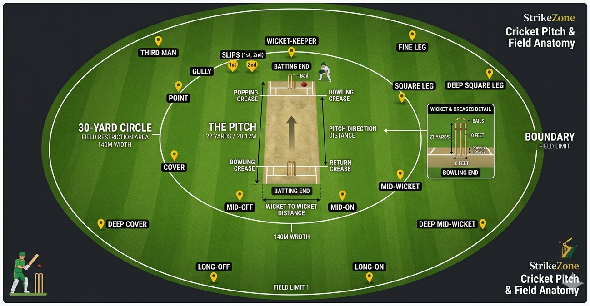

StrikeZone keeps the core of standard T20 youth cricket while adding a league-specific format feature that makes older matches tactically sharper and more exciting.
Standard T20 cricket rules apply throughout, with one StrikeZone-specific addition that makes the competition feel distinct at the older age groups.
